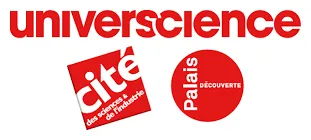
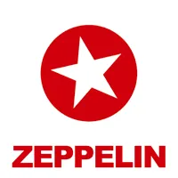
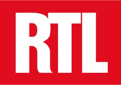
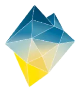
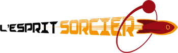
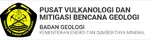
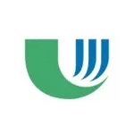

Notre réseau · Partenaires & sponsors
Ils ont rendu ces expéditions possibles
72 partenaires
Association à but non lucratif 100 % bénévole, nous ne collaborons qu'avec des sponsors et mécènes qui partagent nos valeurs environnementales et sociales.
Sponsor principal 1
Sponsor argent 1
BERINGER
Partenaires financiers et techniques 14

Partenaires institutionnels et associatifs 9
Partenaires média 10




TéléSavoirs
Gedeon Programmes
Planète Thalassa
Le BlobÉditions Le Pommier
Partenaires scientifiques 37



 NASA
NASA
Université de La RéunionReserva Natural Municipal de la Laguna Epecuén
Centro de Estudios para la Conservación de Ecosistemas Marinos
Commune de Morne-à-l'Eau
OPGC — Observatoire de Physique du Globe de Clermont-FerrandIPGP — Institut de physique du globe de Paris

Nous contacter